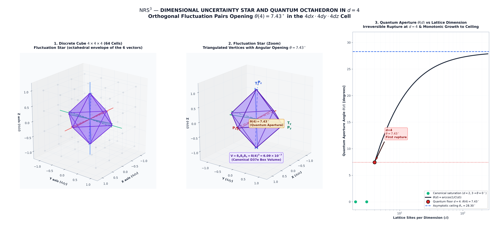
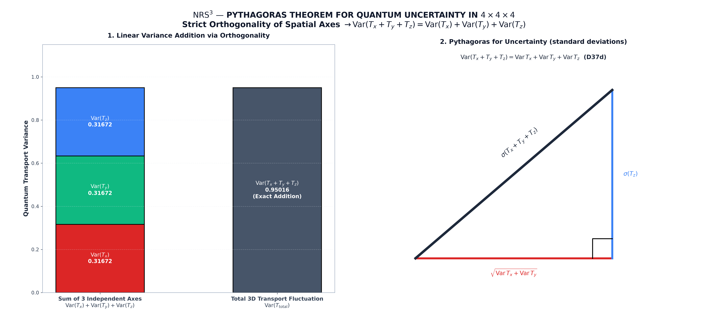
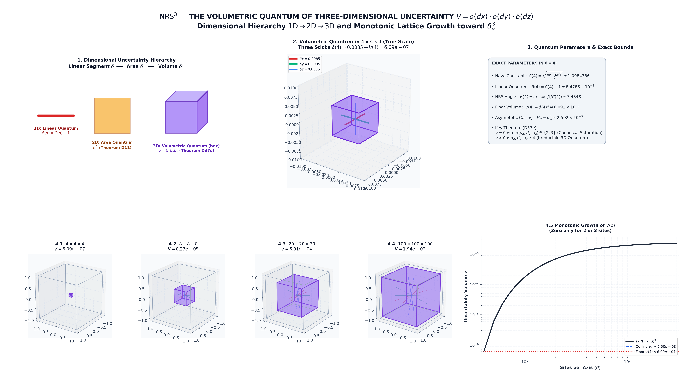
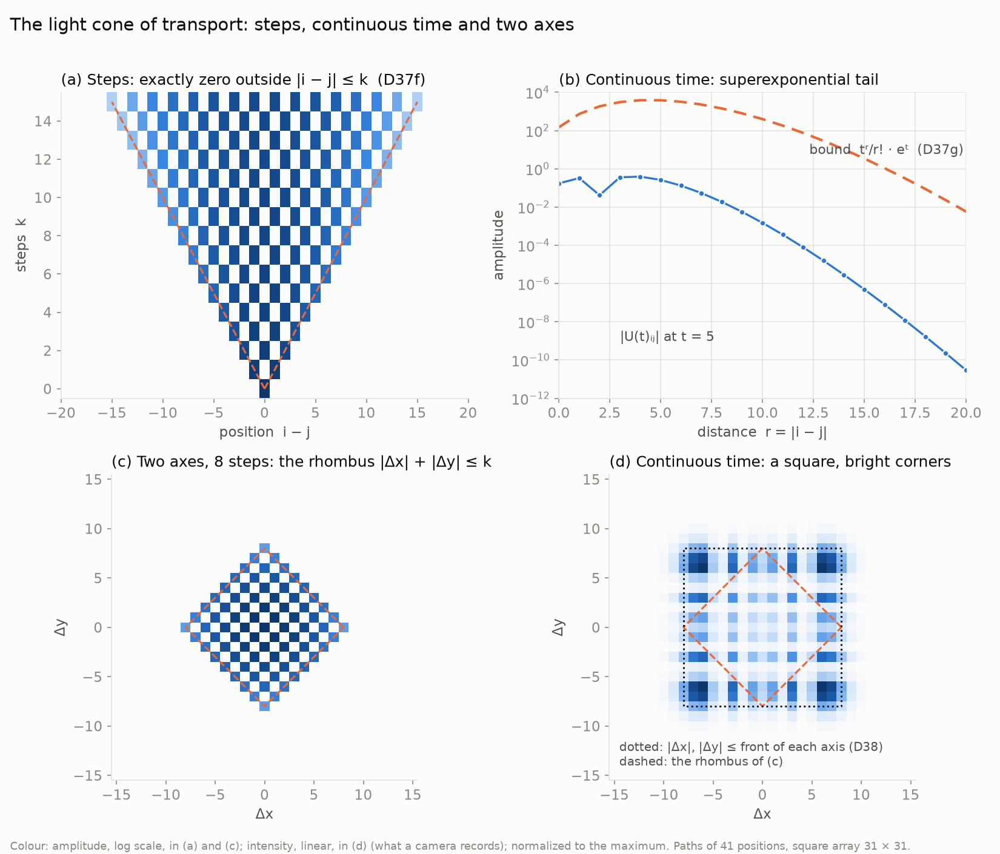
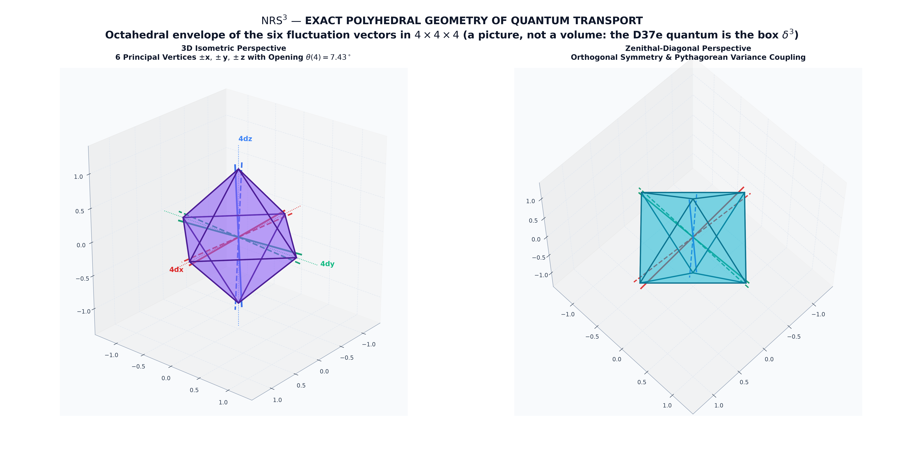

The open cube Nx × Ny × Nz: three path graphs, one conjugate pair (T, P) per axis, axes commuting. Each axis has its own C_Nava(N); it is 1 only for N = 2, 3. The volumetric quantum is the product of the three excesses δ = C_Nava − 1.
Closed form (Physlib #1732): Var H = 4t² sin²θ (N−1)/(N+1), Var X = a²(((N+1)²+2)/12 − 1/(2 sin²θ)), θ = π/(N+1), and C_Nava² = Var H · Var X / cos²θ in units a = t = 1. Limit: C∞ = √(π²/3 − 2).
| PR | What | Lean |
|---|---|---|
| #1725 | the open cube; axes commute; C_Nava per axis | nava_robertson_schrodinger_cube |
| #1739 | Mandelstam–Tamm, Cramér–Rao per axis; ratio 1/C_Nava² | Cube/MandelstamTamm |
| #1730 | Robertson 1934 for several observables | robertson_det |
| #1742 | det|NRS³: six observables; strict from 4 × 4 × 4 | robertson_det_cube, robertson_det_maxCurrentCubeState_strict |
| #1756 | NRS angle and volumetric quantum | Cube/VolumetricQuantum |
| #1774 | equality case of Robertson, several observables | |
| #1745, #1746 | velocity band and its width | VelocityBand |
Full list: merged pull requests · base repository nava-robertson-schrodinger (D37–D49t).





Neighbours: nrs3-hopf · nrs3-uncertainty-cone · nrs3-dark · base page